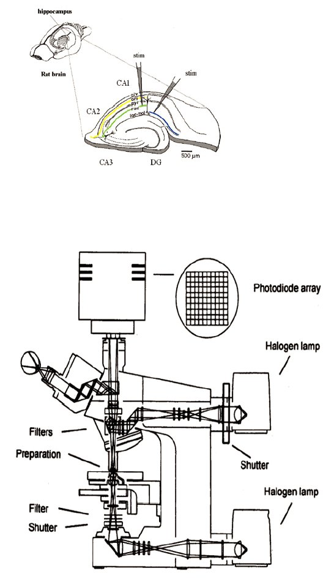
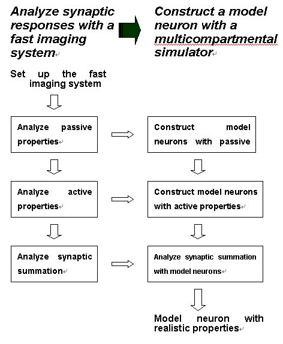
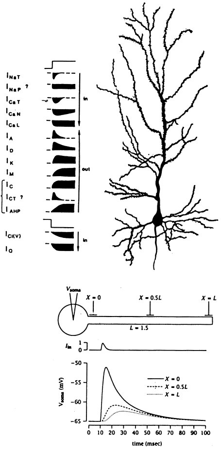

Hiroyoshi Miyakawa
Laboratory of Cellular Neurobiology, School of Life Science,To understand how visual system works in our brain, we need to understand the properties of neurons, the functional building blocks of the nervous systems. Traditionally, neurons have been regarded as threshold elements with passive properties that linearly summate incoming inputs and send out impulses when a threshold is reached. Recent findings, however, revealed far more complicated and dynamic properties of neurons. It has been shown, for example, that diversity of voltage-gated and ligand-gated channels are distributed along the dendrites of neurons and that the neurons show quite complicated activities such as non-linear summation of EPSPs, firing of actions potentials in the dendrites, sub-threshold membrane oscillations and synaptic plasticity. The traditional view of neurons no longer help us understand the way brain works. Novel view needs to be established.
|
 (66k jpeg image) |
 (52k jpeg image) |
 (60k jpeg image) |
|
|
Our goal in this project is to understand the way neurons integrate information, to establish model neurons and to describe the behavior of neurons as simulators. To achieve this goal we investigate synaptic responses of hippocampal pyramidal neurons using fast-optical imaging techniques so that we can simultaneously detect synaptic responses from various locations of neurons, and reproduce the behavior of neurons using multi-compartmental model neuron simulators. Results of our study should provide the basis to analyze how visual information is processed in visual pathways.